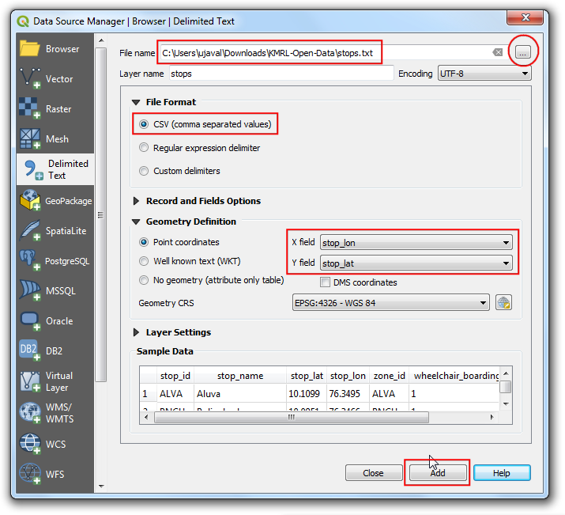
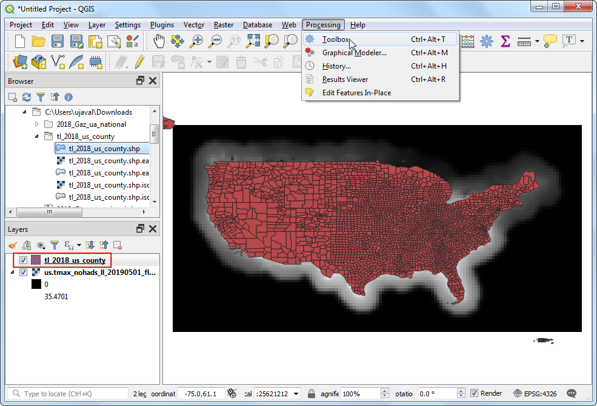
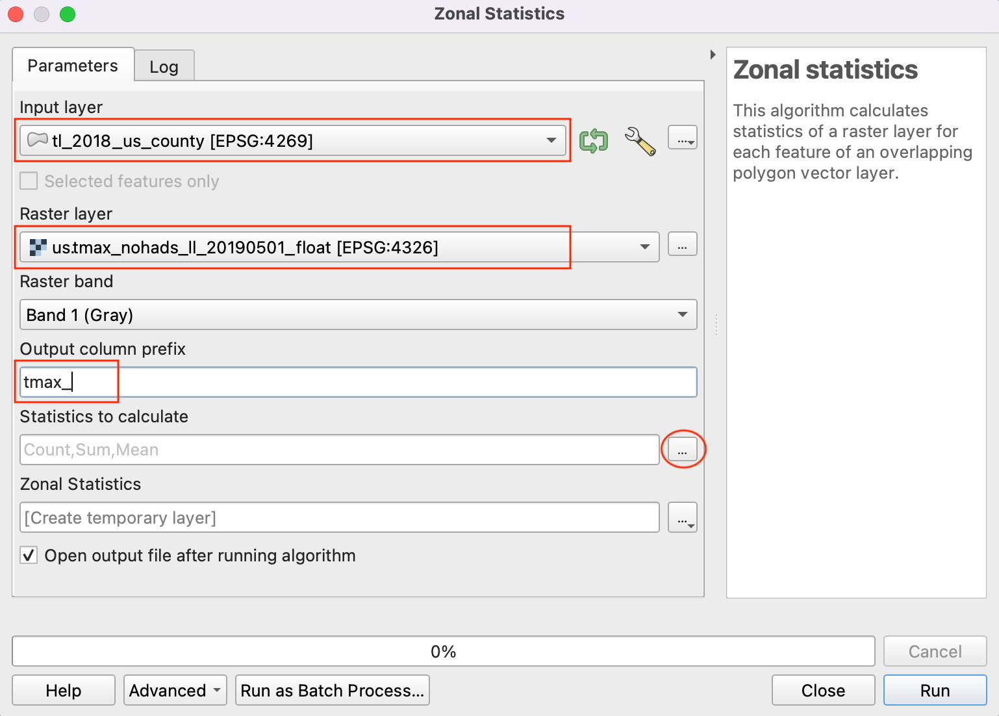
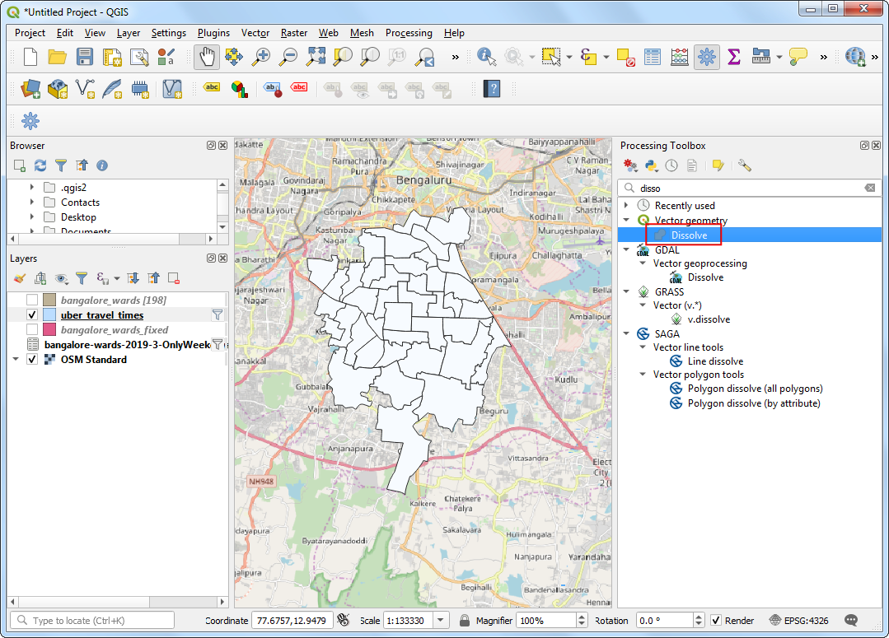

속성 작업 (QGIS3)¶
GIS 데이터는 특징과 속성의 두 부분으로 나뉩니다. 특성은 각 형상에 대한 구조화된 데이터입니다. 지침에서는 GIS 벡터 레이어의 속성 확인 방법과 QGIS에서 속성에 대한 기본 조회 방법을 소개합니다
작업 개요¶
The dataset for this tutorial contains information about populated places of the world. The task is to query and find all the capital cities in the World that have a population greater than 1 million and save the resulting subset as a GeoJSON file.
다른 스킬¶
표현식을 사용하여 레이어에서 특징을 선택하기
속성 툴바 사용하기
Exporting selected features in a layer.
데이터 가져오기¶
Natural Earth provides a Populated Places dataset. Download the simple (less columns) dataset.
For convenience, you may directly download a copy of the dataset from the link below:
ne_10m_populated_places_simple.zip
데이터 원본 [NATURALEARTH]
과정¶
Locate the
ne_10m_populated_places_simple.zipfile in the QGIS Browser and expand it. Select thene_10m_populated_places_simple.shpfile and drag it to the canvas.

새로운 레이어 ne_10m_populated_place_simple이 이제 QGIS에 나타날 것이며 세계지도에서 인구분포를 나타내는 많은 점들을 보게 됩니다. QGIS 캔버스의 기본 보기는 GIS 레이어의 지오메트리를 보여줍니다. 각 점에는 연관된 속성도 있습니다.

참고
If you do not see the toolbar, you can enable it from .
속성 툴바에서 객체 식별 버튼을 클릭합니다. 도구를 선택한 후 캔버스에서 원하는 지점을 클릭하십시오. 해당 지점의 관련 속성은 새 식별 결과 패널에 표시됩니다. 여러 점의 특성을 탐색한 후에는 닫기 버튼을 클릭할 수 있습니다.

한 번에 하나의 특징을 보는 것뿐만 아니라 그것들을 표로 모두 볼 수 있습니다. 속성 툴바에서 속성 테이블 열기 버튼을 클릭합니다. ne_10m_populated_place_simple 레이어를 우클릭하고 속성 테이블 열기를 선택할 수 도 있습니다.

수평으로 스크롤하여 pop_max 열을 찾을 수 있습니다. 이 필드에는 관련 장소의 인구가 포함됩니다. 필드 헤더를 두 번 클릭하여 열을 내림차순으로 정렬할 수 있습니다.

이제 이 속성들에 대한 조회가 가능합니다. QGIS는 SQL과 같은 표현식을 사용하여 조회합니다. 상단 바의 표현식을 이용해 객체 선택을 클릭하십시오.

Selet by Expression 창에서 필드와 값 탭을 확장하고 pop_max 레이블을 두 번 클릭하십시오. 좌측의 표현식 부분에 그것이 추가되어 있음을 확인할 수 있습니다. 필드 값을 잘 모를 경우 All Unique 버튼을 클릭하여 데이터셋에 있는 속성 값을 확인하십시오. 이 과정을 통해 100만 명 이상의 인구를 가진 모든 객체를 찾을 수 있습니다. 아래와 같이 표현식을 완료하고 객체 선택을 누른 다음 닫기를 클릭합니다.
"pop_max" > 1000000
참고
QGIS 표현식 창에서 큰따옴표가 있는 텍스트는 필드를 나타내며 작은따옴표가 있는 텍스트는 문자열 값을 나타냅니다.
이제 속성 테이블의 일부 행이 선택되었음을 알 수 있습니다. 또한 라벨 창에서 선택된 객체의 수가 변경되고 표시됩니다.

속성 테이블 창을 닫고 기본 QGIS 창으로 돌아가십시오. 점의 하위 집합이 현재 노란색으로 렌더링되어 있음을 알 수 있습니다. 이것은 조회의 결과이며 선택된 점은 pop_max 속성 값이 1000000보다 큰 점들입니다.

그 장소가 인구가 100만 명 이상인 것 외에도수도여야 한다는 조건을 포함하도록 조회를 업데이트해봅시다. 표현식으로 객체 선택으로 빠르게 이동하려면 속성 툴바에서 표현식 버튼으로 표현식으로 객체 선택을 사용할 수 있습니다.

The field containing data about capitals is adm0cap. The value
1indicates that the place is a capital. We can add this criteria to our previous expression using the and operator. Enter the expression as below and click Select Features and then Close.
"pop_max" > 1000000 and "adm0cap" = 1
기본 QGIS 창으로 돌아가십시오. 이제 선택한 점의 작은 부분 집합을 볼 수 있습니다. 이것은 두 번째 조회의 결과로 100만 명 이상의 인구가 있는 국가 수도의 데이터셋 모든 장소를 보여줍니다.

이제 선택한 기능을 새 레이어로 내보냅니다. ne_10m_populated_place_simple 레이어를 우클릭하고 내보내기 ‣ 선택한 객체를 다른 이름으로 저장을 선택합니다.

원하는 형식으로 선택할 수 있습니다. 이번 연습에서는 GeoJSON을 선택합니다. GeoJSON은 웹 매핑에서 널리 사용되는 텍스트 기반 형식입니다. 파일 이름 옆에 있는 … 버튼을 클릭하고 pumped_capitals.geojson을 출력 파일명으로 입력하십시오.

입력 자료는 많은 열을 가지고 있습니다. 내보낼 원래 열의 하위 집합만 선택할 수 있습니다. 내보낼 및 내보내기 옵션 선택을 확장하십시오. 모두 선택해제를 클릭하고 name과 pop_max 열을 선택합니다. 확인을 클릭합니다.

QGIS에 새로운 레이어 populated_capitals가 나타납니다. ne_10m_populated_place_simple 레이어를 선택 해제하면 이를 숨기고 새로 내보낸 레이어에서 점을 볼 수 있습니다.

If you want to give feedback or share your experience with this tutorial, please comment below. (requires GitHub account)